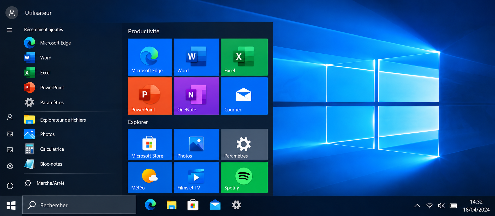
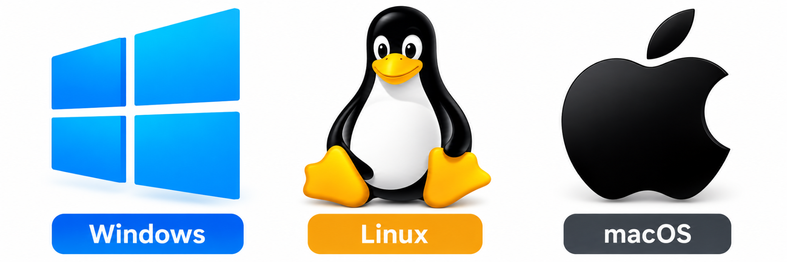
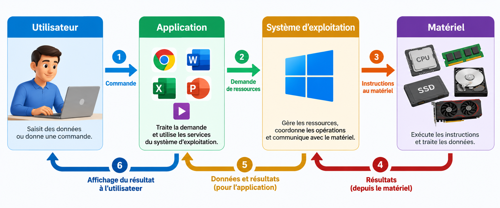

Systèmes d’exploitation
Comprendre le rôle d’un système d’exploitation, ses principales fonctions et la manière dont il assure l’interaction entre l’utilisateur, les applications et le matériel.
1. Définition d’un système d’exploitation
Définition
Un système d’exploitation, souvent abrégé SE ou OS (Operating System), est l’ensemble de logiciels fondamentaux qui permettent à un ordinateur de fonctionner et d’utiliser ses ressources matérielles.
Il constitue une couche intermédiaire entre le matériel, les applications et l’utilisateur. Sans système d’exploitation, l’utilisateur devrait contrôler directement les composants matériels et chaque application devrait gérer elle-même les particularités du matériel.
Exemple
Lorsqu’un utilisateur ouvre un navigateur Web, il ne demande pas directement au processeur de lire des instructions ni au SSD de rechercher chaque fichier. L’application formule des demandes au système d’exploitation, qui coordonne l’accès aux ressources nécessaires.
2. Pourquoi un système d’exploitation est-il nécessaire ?
Un ordinateur possède plusieurs ressources : processeur, RAM, stockage, écran, clavier, souris, interfaces réseau et autres périphériques. Plusieurs programmes peuvent vouloir utiliser ces ressources simultanément. Le système d’exploitation fournit des mécanismes permettant de les organiser et de les partager.
| Besoin | Rôle du système d’exploitation |
|---|---|
| Exécuter des applications | Charge les programmes, leur attribue des ressources et supervise leur exécution. |
| Utiliser la mémoire | Organise l’utilisation de la RAM par le système et les programmes. |
| Conserver des fichiers | Fournit une organisation logique permettant de créer, lire, modifier et supprimer des fichiers. |
| Utiliser les périphériques | Coordonne les échanges avec le clavier, la souris, l’écran, l’imprimante et d’autres équipements. |
| Utiliser le réseau | Fournit les services nécessaires aux communications réseau. |
| Contrôler l’accès | Gère notamment les comptes, les droits et certaines protections du système. |
Exemple
Lorsque plusieurs applications sont ouvertes, le système d’exploitation doit répartir le temps du processeur et la mémoire disponible entre elles tout en maintenant le fonctionnement de l’interface et des services du système.
3. Les principales fonctions d’un système d’exploitation
Gestion du processeur et des processus
Un processus est une instance d’un programme en cours d’exécution. Le système d’exploitation organise l’exécution des processus et répartit l’utilisation du processeur entre les différentes tâches.
Gestion de la mémoire
Le système d’exploitation attribue de l’espace en mémoire aux programmes et récupère cet espace lorsqu’il n’est plus nécessaire. Il doit également éviter qu’un programme n’utilise arbitrairement la mémoire réservée à un autre processus.
Gestion des fichiers et du stockage
Le système fournit des mécanismes pour organiser les données sous forme de fichiers et de dossiers. Il permet notamment leur création, leur lecture, leur modification, leur déplacement et leur suppression.
Gestion des périphériques
Le système d’exploitation coordonne l’utilisation des périphériques. Il s’appuie notamment sur des pilotes pour communiquer avec certains matériels.
Gestion des droits
Le système d’exploitation assure la gestion des permissions d’accès aux ressources pour les différents utilisateurs. Cette fonction permet de déterminer qui peut accéder à une ressource et quelles opérations sont autorisées.
Gestion des utilisateurs et de la sécurité
La gestion des droits s’inscrit dans un ensemble plus large comprenant les comptes utilisateurs et les mécanismes permettant de contrôler l’accès aux ressources du système.
Gestion du réseau
Les systèmes modernes intègrent des fonctions permettant de configurer les interfaces réseau et de communiquer avec d’autres machines et services.
4. Le noyau du système d’exploitation
Définition
Le noyau, ou kernel, est la partie centrale du système d’exploitation. Il fonctionne au cœur du système et fournit des mécanismes fondamentaux permettant de gérer les ressources matérielles et l’exécution des programmes.
Il intervient notamment dans la gestion du processeur, de la mémoire, des entrées/sorties et des interactions de bas niveau avec le matériel.
L’interpréteur de commandes (shell)
L’interpréteur de commandes, appelé shell en anglais, permet la communication avec le système d’exploitation au moyen d’un langage de commandes.
Le système de fichiers
Le système de fichiers, ou file system (FS), permet d’enregistrer et d’organiser les fichiers dans une arborescence.
Exemple
Une application qui souhaite accéder à un fichier ne manipule normalement pas directement le contrôleur du stockage. Elle utilise les services fournis par le système, qui transmet les opérations nécessaires aux couches appropriées.
5. Interface utilisateur : GUI et CLI
L’utilisateur doit disposer d’un moyen d’interagir avec le système. Deux formes d’interaction sont particulièrement importantes.

| Interface | Définition | Exemples d’utilisation |
|---|---|---|
| GUI | Graphical User Interface : interface graphique reposant notamment sur des fenêtres, menus, icônes et boutons. | Explorateur de fichiers, paramètres système, bureau. |
| CLI | Command-Line Interface : interface permettant de communiquer avec le système au moyen de commandes textuelles. | Terminal, invite de commandes, shell. |
Une interface graphique facilite de nombreuses opérations courantes. Une interface en ligne de commande permet quant à elle d’exécuter précisément des commandes, d’automatiser certaines tâches et d’administrer efficacement un système. Les deux approches sont complémentaires.
Exemple
Un utilisateur peut créer un dossier avec un gestionnaire de fichiers graphique. Un administrateur peut effectuer une opération équivalente à l’aide d’une commande dans un terminal.
6. Pilotes et communication avec le matériel
Définition
Un pilote de périphérique, ou driver, est un logiciel permettant au système d’exploitation de communiquer avec un matériel particulier.
Le pilote traduit les opérations attendues par le système en interactions adaptées au périphérique concerné. Les détails de l’installation et de la gestion des pilotes seront étudiés dans une leçon dédiée.
Exemple
Une imprimante peut être physiquement connectée à l’ordinateur, mais le système doit également être capable de la reconnaître et de lui transmettre correctement les travaux d’impression.
7. Types de systèmes d’exploitation
Les systèmes d’exploitation peuvent être classés selon le matériel utilisé et le rôle de la machine.
| Catégorie | Utilisation générale | Exemples |
|---|---|---|
| Ordinateurs personnels | Postes de travail et ordinateurs portables. | Windows, macOS, distributions Linux. |
| Serveurs | Fourniture de services à d’autres systèmes ou utilisateurs. | Windows Server, distributions Linux serveur. |
| Mobiles | Téléphones intelligents et tablettes. | Android, iOS. |
| Embarqués | Équipements spécialisés intégrant un système informatique. | Systèmes destinés à des appareils ou contrôleurs spécialisés. |
8. Windows, Linux et macOS : vue d’ensemble
Windows, Linux et macOS sont trois environnements importants sur les ordinateurs personnels et professionnels, mais ils ne sont pas organisés exactement de la même manière.

| Système | Caractéristiques générales |
|---|---|
| Windows | Système largement utilisé sur les ordinateurs personnels et dans de nombreux environnements professionnels; il propose des outils graphiques et des outils d’administration en ligne de commande. |
| Linux | Famille de systèmes reposant sur le noyau Linux et distribuée sous différentes distributions; très présente dans les serveurs et également disponible sur les postes de travail. |
| macOS | Système d’exploitation d’Apple destiné aux ordinateurs Mac, avec une interface graphique et des outils Unix sous-jacents. |
Le choix d’un système dépend du matériel, des applications nécessaires, des contraintes de l’organisation, des compétences disponibles et des objectifs d’utilisation. Cette leçon vise à comprendre leurs principes communs plutôt qu’à établir un classement entre eux.
9. Éditions, versions et distributions
Pourquoi plusieurs éditions ?
Les systèmes d’exploitation peuvent être proposés sous différentes éditions. Ces éditions offrent des fonctionnalités différentes afin de répondre aux besoins variés des utilisateurs. Le choix de l’édition influence donc l’expérience et les possibilités offertes par le système.
Exemple : éditions de Windows
Le document de cours présente, avec Windows 10, les éditions Familiale, Professionnelle, Entreprise et Éducation. Cet exemple montre qu’un même système peut être décliné pour différents contextes d’utilisation.
Linux : distributions et personnalisation
Pour Linux, le document met plutôt l’accent sur les distributions. Il indique qu’il n’existe pas d’édition unique comparable au modèle présenté pour Windows et cite notamment Ubuntu, Fedora et Debian. Cette diversité permet de choisir un environnement adapté à des besoins spécifiques.
| Notion | Idée essentielle | Exemples du document |
|---|---|---|
| Édition | Variante d’un système destinée à certains usages ou publics. | Windows Familiale, Professionnelle, Entreprise, Éducation. |
| Distribution Linux | Choix d’un environnement Linux pouvant répondre à des besoins spécifiques. | Ubuntu, Fedora, Debian. |
10. Comment choisir une édition ou un système ?
Le document propose quatre critères principaux à considérer avant de choisir :
Identifier le contexte dans lequel le système sera utilisé.
Déterminer les besoins de contrôle et de gestion du poste.
Repérer les besoins liés, par exemple, à la créativité ou au gaming.
Prendre en compte les contraintes financières dans le choix.
Exemples de choix
Le cours illustre cette démarche par différents profils : un étudiant utilisant un ordinateur portable, une entreprise ayant des besoins de sécurité et de gestion, et un créateur de contenu recherchant des fonctionnalités avancées.
11. Vérifier les exigences techniques
Avant l’installation, il faut vérifier que l’ordinateur satisfait les conditions techniques du système et de la version choisis. Le document de cours organise cette vérification autour de quatre éléments principaux :
| Élément | Vérification |
|---|---|
| Processeur | Vérifier que ses caractéristiques satisfont les exigences indiquées. |
| Mémoire RAM | Vérifier que la quantité disponible est suffisante. |
| Espace disque | Vérifier que le stockage disponible permet l’installation. |
| Carte graphique | Vérifier la compatibilité demandée par le système. |
12. Différents systèmes d’exploitation et leurs prérequis
Avant d’installer un système d’exploitation, il faut identifier le système et la version visés, puis vérifier que l’ordinateur possède les ressources matérielles nécessaires. Les principaux éléments à contrôler sont le processeur, la mémoire RAM, l’espace de stockage et, lorsque cela est exigé, les capacités graphiques ou d’autres caractéristiques de la plateforme.
| Système d’exploitation | Contexte | Prérequis / vérifications |
|---|---|---|
| Windows 10 64 bits | Ordinateurs personnels et professionnels. |
À noter : le support standard de Windows 10 a pris fin le 14 octobre 2025. Source : Microsoft Support |
| Ubuntu Desktop | Distribution Linux destinée aux ordinateurs de bureau et portables. |
|
| macOS | Système d’exploitation des ordinateurs Mac. |
Apple ne définit pas un minimum générique unique sous la forme « CPU + RAM + disque » pour toutes les versions de macOS. Il faut surtout vérifier que le modèle précis du Mac est compatible avec la version de macOS que l’on souhaite installer. Pour macOS Tahoe 26, Apple fournit directement une liste des modèles de Mac compatibles. Source : Assistance Apple — compatibilité macOS Tahoe 26 |
Méthode de vérification avant installation
- Identifier le système d’exploitation et sa version.
- Relever les caractéristiques matérielles de l’ordinateur.
- Comparer le processeur, la RAM, le stockage et les autres exigences avec les prérequis annoncés.
- Vérifier la compatibilité du matériel et des périphériques nécessaires.
- Ne commencer l’installation que lorsque les conditions requises sont satisfaites.
13. Du démarrage à l’utilisation du système
Lorsqu’un ordinateur est mis sous tension, plusieurs étapes doivent se produire avant que l’utilisateur puisse travailler. À ce stade du cours, on peut retenir la séquence générale suivante :
- Le matériel est mis sous tension et initialisé.
- Le firmware participe à l’identification du périphérique de démarrage.
- Le mécanisme de démarrage charge les éléments nécessaires du système d’exploitation.
- Le noyau initialise les ressources fondamentales.
- Les services du système démarrent.
- Une interface de connexion ou un environnement utilisateur devient disponible.
- L’utilisateur peut ensuite lancer ses applications.
14. Relation entre applications, système d’exploitation et matériel
Une application utilise les services du système d’exploitation pour accéder aux ressources. Le système d’exploitation coordonne ensuite l’utilisation du matériel.

Exemple guidé : ouverture d’un fichier
- L’utilisateur sélectionne un fichier dans une application.
- L’application demande au système d’exploitation d’accéder au fichier.
- Le système vérifie les informations nécessaires et localise les données à travers son organisation du stockage.
- Les opérations d’entrée/sortie nécessaires sont réalisées avec le périphérique de stockage.
- Les données sont placées en mémoire pour être utilisées.
- L’application traite les données et présente le résultat à l’utilisateur.
Mise en situation — Plusieurs applications en même temps
Un utilisateur ouvre un navigateur avec plusieurs onglets, un logiciel de visioconférence et un traitement de texte. Pendant ce temps, il télécharge un fichier et imprime un document.
- Quelles ressources matérielles sont sollicitées ?
- Quelles fonctions du système d’exploitation interviennent dans cette situation ?
- Pourquoi le système doit-il organiser l’utilisation du processeur et de la RAM ?
- Quel rôle joue le système lors de l’impression ?
- Quel rôle joue-t-il dans le téléchargement du fichier ?
Activité de synthèse
Construisez un schéma expliquant le rôle du système d’exploitation dans un ordinateur. Votre schéma doit faire apparaître :
- l’utilisateur;
- les applications;
- le système d’exploitation;
- le noyau;
- les pilotes;
- le processeur et la mémoire;
- le stockage;
- au moins deux périphériques.
Ajoutez des flèches et une courte explication pour montrer comment circulent les demandes et les résultats.
Complétez votre synthèse par un tableau indiquant une édition Windows, une distribution Linux et les quatre critères de choix présentés dans le cours.
À retenir
Quiz autocorrigé — Systèmes d’exploitation
Répondez aux questions suivantes, puis cliquez sur Corriger le quiz. Une seule réponse est correcte pour chaque question.